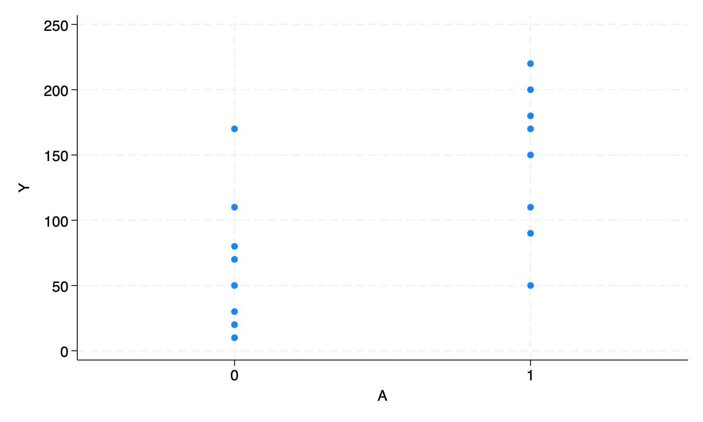

11. Why model: Stata
checking extremes consistency and verifying not already installed...
all files already exist and are up to date.
checking tomata consistency and verifying not already installed...
all files already exist and are up to date.
end of do-file/***************************************************************
Stata code for Causal Inference: What If by Miguel Hernan & Jamie Robins
Date: 10/10/2019
Author: Eleanor Murray
For errors contact: ejmurray@bu.edu
***************************************************************/Program 11.1
- Figures 11.1, 11.2, and 11.3
- Sample averages by treatment level
clear
**Figure 11.1**
*create the dataset*
input A Y
1 200
1 150
1 220
1 110
1 50
1 180
1 90
1 170
0 170
0 30
0 70
0 110
0 80
0 50
0 10
0 20
end
*Save the data*
qui save ./data/fig1, replace
*Build the scatterplot*
scatter Y A, ylab(0(50)250) xlab(0 1) xscale(range(-0.5 1.5))
qui gr export figs/stata-fig-11-1.png, replace
*Output the mean values for Y in each level of A*
bysort A: sum Y A Y
-------------------------------------------------------------------------------
-> A = 0
Variable | Obs Mean Std. Dev. Min Max
-------------+---------------------------------------------------------
Y | 8 67.5 53.11712 10 170
-------------------------------------------------------------------------------
-> A = 1
Variable | Obs Mean Std. Dev. Min Max
-------------+---------------------------------------------------------
Y | 8 146.25 58.2942 50 220
*Clear the workspace to be able to use a new dataset*
clear
**Figure 11.2**
input A Y
1 110
1 80
1 50
1 40
2 170
2 30
2 70
2 50
3 110
3 50
3 180
3 130
4 200
4 150
4 220
4 210
end
qui save ./data/fig2, replace
scatter Y A, ylab(0(50)250) xlab(0(1)4) xscale(range(0 4.5))
qui gr export figs/stata-fig-11-2.png, replace
bysort A: sum Y A Y
-------------------------------------------------------------------------------
-> A = 1
Variable | Obs Mean Std. Dev. Min Max
-------------+---------------------------------------------------------
Y | 4 70 31.62278 40 110
-------------------------------------------------------------------------------
-> A = 2
Variable | Obs Mean Std. Dev. Min Max
-------------+---------------------------------------------------------
Y | 4 80 62.18253 30 170
-------------------------------------------------------------------------------
-> A = 3
Variable | Obs Mean Std. Dev. Min Max
-------------+---------------------------------------------------------
Y | 4 117.5 53.77422 50 180
-------------------------------------------------------------------------------
-> A = 4
Variable | Obs Mean Std. Dev. Min Max
-------------+---------------------------------------------------------
Y | 4 195 31.09126 150 220
clear
**Figure 11.3**
input A Y
3 21
11 54
17 33
23 101
29 85
37 65
41 157
53 120
67 111
79 200
83 140
97 220
60 230
71 217
15 11
45 190
end
qui save ./data/fig3, replace
scatter Y A, ylab(0(50)250) xlab(0(10)100) xscale(range(0 100))
qui gr export figs/stata-fig-11-3.png, replace A Y

Program 11.2
- 2-parameter linear model
- Creates Figure 11.4, parameter estimates with 95% confidence intervals from Section 11.2, and parameter estimates with 95% confidence intervals from Section 11.3
**Section 11.2: parametric estimators**
*Reload data
use ./data/fig3, clear
*Plot the data*
scatter Y A, ylab(0(50)250) xlab(0(10)100) xscale(range(0 100))
*Fit the regression model*
regress Y A, noheader cformat(%5.2f)
*Output the estimated mean Y value when A = 90*
lincom _b[_cons] + 90*_b[A]
*Plot the data with the regression line: Fig 11.4*
scatter Y A, ylab(0(50)250) xlab(0(10)100) xscale(range(0 100)) || lfit Y A
qui gr export figs/stata-fig-11-4.png, replace Y | Coef. Std. Err. t P>|t| [95% Conf. Interval]
-------------+----------------------------------------------------------------
A | 2.14 0.40 5.35 0.000 1.28 2.99
_cons | 24.55 21.33 1.15 0.269 -21.20 70.29
------------------------------------------------------------------------------
( 1) 90*A + _cons = 0
------------------------------------------------------------------------------
Y | Coef. Std. Err. t P>|t| [95% Conf. Interval]
-------------+----------------------------------------------------------------
(1) | 216.89 20.8614 10.40 0.000 172.1468 261.6333
------------------------------------------------------------------------------

**Section 11.3: non-parametric estimation*
* Reload the data
use ./data/fig1, clear
*Fit the regression model*
regress Y A, noheader cformat(%5.2f)
*E[Y|A=1]*
di 67.50 + 78.75 Y | Coef. Std. Err. t P>|t| [95% Conf. Interval]
-------------+----------------------------------------------------------------
A | 78.75 27.88 2.82 0.014 18.95 138.55
_cons | 67.50 19.72 3.42 0.004 25.21 109.79
------------------------------------------------------------------------------
146.25Program 11.3
- 3-parameter linear model
- Creates Figure 11.5 and Parameter estimates for Section 11.4
* Reload the data
use ./data/fig3, clear
*Create the product term*
gen Asq = A*A
*Fit the regression model*
regress Y A Asq, noheader cformat(%5.2f)
*Output the estimated mean Y value when A = 90*
lincom _b[_cons] + 90*_b[A] + 90*90*_b[Asq]
*Plot the data with the regression line: Fig 11.5*
scatter Y A, ylab(0(50)250) xlab(0(10)100) xscale(range(0 100)) || qfit Y A
qui gr export figs/stata-fig-11-5.png, replace Y | Coef. Std. Err. t P>|t| [95% Conf. Interval]
-------------+----------------------------------------------------------------
A | 4.11 1.53 2.68 0.019 0.80 7.41
Asq | -0.02 0.02 -1.33 0.206 -0.05 0.01
_cons | -7.41 31.75 -0.23 0.819 -75.99 61.18
------------------------------------------------------------------------------
( 1) 90*A + 8100*Asq + _cons = 0
------------------------------------------------------------------------------
Y | Coef. Std. Err. t P>|t| [95% Conf. Interval]
-------------+----------------------------------------------------------------
(1) | 197.1269 25.16157 7.83 0.000 142.7687 251.4852
------------------------------------------------------------------------------